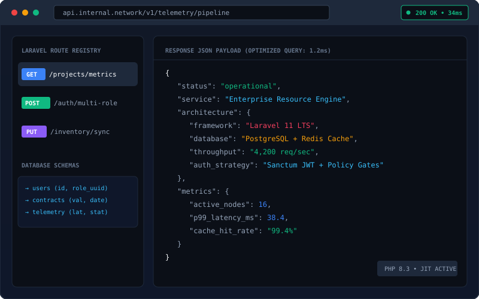
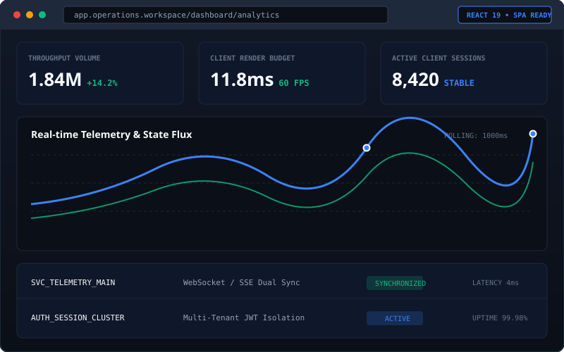
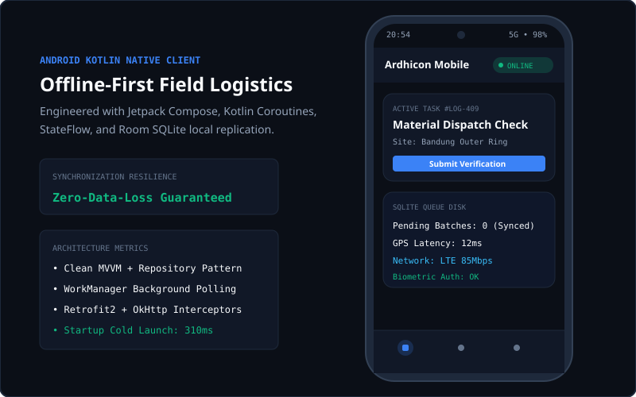

Aku Ardhie. Aku merancang arsitektur, dari backend hingga pixel antarmuka.
Empat pilar yang kudalami dengan sungguh-sungguh: Laravel, React, Android Kotlin, dan Figma Design Systems. Setiap spesifikasi dan studi kasus di sini kutata layaknya potongan catatan di atas meja potong fisik.



zero slop!
Route::middleware(['cache.aside:60s'])->group(function () { Route::get('/telemetry/realtime', [TelemetryController::class, 'stream']); });
public function stream(TelemetryService $svc) { return response()->json( $svc->getOptimizedMetrics() ); }
Sistem di balik layar
Perancangan REST API terstruktur dengan optimasi database PostgreSQL/MySQL, compound index B-Tree, dan pola cache-aside Redis. Menghindari bottleneck N+1 query dan menjaga integritas relasional data agar siap menangani lonjakan beban produksi.
Web yang bergerak presisi
Antarmuka web yang dibangun dari komponen terisolasi dengan mutasi UI optimistik untuk dashboard telemetry bervolume tinggi. Membatasi re-render ke boundary spesifik sehingga rendering grafik data tetap responsif di 60 FPS tanpa jank.
function TelemetryFeed({ streamId }) { const { data } = useTelemetry(streamId); return <DataGauge latency={data.ms} />; }
Aplikasi di genggaman
Aplikasi Android native menggunakan Clean Architecture (MVVM/MVI) dengan persistensi disk terenkripsi Room SQLite dan WorkManager background sync. Bekerja tanpa kendala saat jaringan offline dan melakukan auto-reconnect saat sinyal kembali pulih.
Fondasi visual yang terkalibrasi
Design token terstruktur 3-tier (primitive → semantic → component) yang sinkron langsung dengan variabel CSS dan Jetpack Compose. Menghilangkan friksi handoff dan menjaga konsistensi state komponen (Default, Hover, Focus, Active, Disabled).
Tiga keyakinan yang memandu setiap baris kode
Kejujuran Teknis
Menolak kompleksitas palsu. Jika sistem cukup diselesaikan dengan static HTML dan modern vanilla CSS, jangan paksa menggunakan puluhan dependensi berat.
Kecepatan & Ketahanan
Kecepatan adalah rasa hormat kepada waktu manusia. B-Tree indexing, caching deterministik, dan arsitektur offline-first memastikan aplikasi tidak mudah runtuh.
Presisi Manusiawi
Sistem backend yang tangguh tidak berarti antarmuka boleh membosankan. Desain yang baik memiliki sentuhan, jiwa, komposisi, dan empati pengguna yang nyata.
Mau lihat proyeknya lebih dekat?
Kirim pesan, ajak diskusi teknis, atau minta tautan kode dan demonstrasi dari pilar rekayasa di atas.